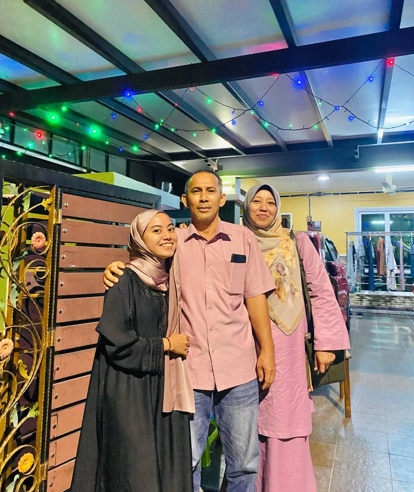
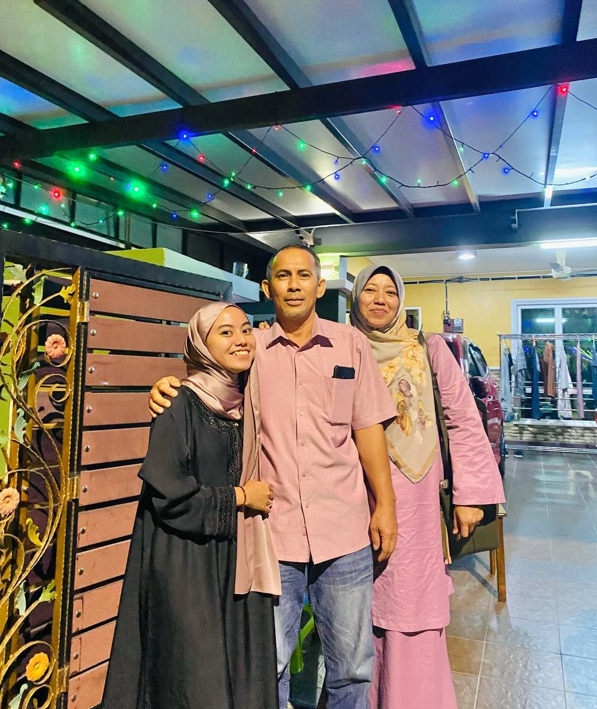

| Homepage | Myself | Education | Working Experience | Family | My Friends | Gallery | Contact |
|---|
My Family
❀
 

Family is the cornerstone of our lives, providing us with love, support, and a sense of belonging. ♡In my case, I am incredibly fortunate to have a loving and close-knit family that fills my days with joy and happiness.
Well, I will introduce you to the members of my family, describe our bond, and share the values and experiences that have shaped us.
At the heart of my family are my wonderful parents. They are the pillars of strength and the guiding forces in my life. I am lucky to have siblings who are not only my companions but also my best friends. We share countless memories of laughter, shared secrets, and unforgettable adventures. Together, we form a tight bond of siblinghood, supporting and cherishing one another through thick and thin. Through shared experiences, my family has created a tapestry of cherished memories. From vacations to picnics, from celebrating achievements to consoling each other during tough times, we have grown together. These experiences have taught me the value of empathy, compassion, and compromise. They have also shown me the significance of creating a strong foundation of love and understanding within a family.